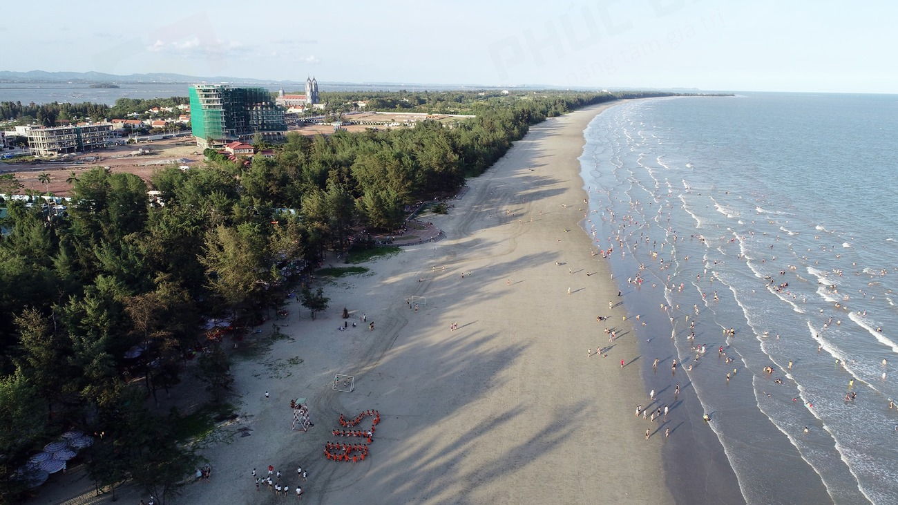

Vẻ đẹp thiên nhiên
Quảng Ninh sở hữu nhiều danh lam thắng cảnh nổi tiếng với vẻ đẹp thiên nhiên độc đáo, thu hút hàng triệu du khách mỗi năm.
Vịnh Hạ Long là di sản thiên nhiên thế giới được UNESCO công nhận.
Nơi đây nổi tiếng với hàng nghìn hòn đảo đá vôi lớn nhỏ trên mặt biển xanh.
Mang vẻ đẹp hoang sơ và yên bình hơn so với Vịnh Hạ Long.
Đây là điểm đến lý tưởng cho du khách yêu thích thiên nhiên.

Đảo Cô Tô nổi tiếng với biển xanh, cát trắng và không khí trong lành.
Đây là một trong những điểm du lịch biển hấp dẫn nhất miền Bắc.
Trà Cổ là một trong những bãi biển dài và đẹp nhất Việt Nam.
Nơi đây nổi tiếng với vẻ đẹp yên bình, nước biển trong xanh.
